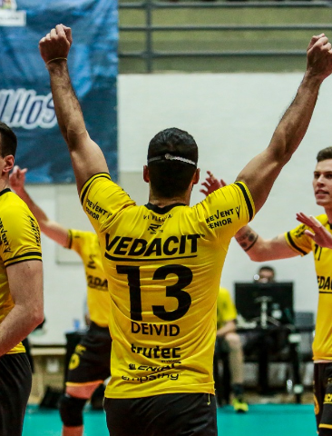
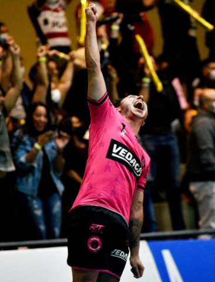
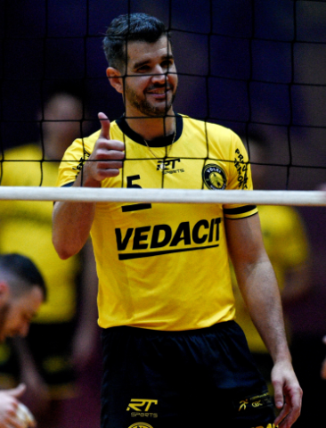
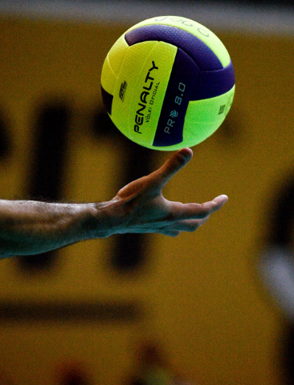

Menu de acessibilidade

Contraste
Texto
Libras
TRAJETÓRIA
Campeão da Superliga B em 2020, classificado em 4º lugar no Campeonato Paulista e em 9º na classificação geral da Superliga Banco do Brasil, o VVG tem sua sede na cidade de Guarulhos, Grande São Paulo, que tem aproximadamente 1,4 milhão de habitantes.
Com o apoio e a segurança que a Vedacit proporciona por meio do patrocínio, os jogadores do VVG podem se concentrar no que realmente importa, trazendo resultados e placares emocionantes.
“Ter uma empresa que acredita no nosso trabalho e assume um compromisso de dois anos, período considerado longo no voleibol, foi fundamental para o nosso desempenho” - Anderson Marsili, gestor Esportivo do Vedacit Vôlei Guarulhos.
CONFIRA O ELENCO QUE VAI DISPUTAR A SUPER LIGA 2021/2022
O PATROCÍNIO POSSUI PAPEL FUNDAMENTAL NA CARREIRA DE ATLETAS
Em 2019, o VVG conquistou o primeiro lugar na Superliga C.
Em 2020, nosso time ficou na 9ª colocação da Superliga A, e, depois de liderar a temporada da Superliga B 2020, o Vedacit Vôlei Guarulhos conquistou a primeira vaga para a Superliga Banco do Brasil (ex-Superliga A), principal categoria do Vôlei nacional, por deliberação da CBV (Confederação Brasileira de Voleibol).





Exibindo
1
de

Utilizamos cookies em nosso site para trazer uma melhor experiência aos visitantes. Você pode aceitar ou recusar o uso de cookies. Para mais detalhes, leia nossa Política de Privacidade.
© Copyright Vedacit 2020